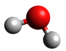
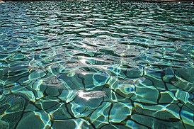
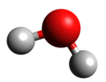
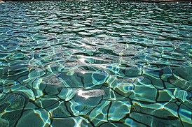

Вода
Вода́ ( оксид водорода, гидроксид водорода, химическая формула — H2O) — бинарное неорганическое соединение, молекула которого состоит из двух атомов водорода и одного — кислорода, которые соединены между собой ковалентной связью. При нормальных условиях представляет собой прозрачную жидкость, не имеющую цвета (при малой толщине слоя), запаха и вкуса. В твёрдом состоянии называется льдом (кристаллы льда могут образовывать снег или иней), а в газообразном — водяным паром. Вода также может существовать в виде жидких кристаллов (на гидрофильных поверхностях)[7] [8].
Вода является хорошим сильнополярным растворителем. В природных условиях всегда содержит растворённые вещества (соли, газы).
Исключительно важна роль воды в глобальном кругообороте вещества и энергии [9], возникновении и поддержании жизни на Земле, в химическом строении живых организмов, в формировании климата и погоды. Вода является важнейшим веществом для всех живых существ на Земле [10]. В среднем в организме растений и животных содержится более 50 % воды[11].
 



Физические свойства
| Температура, °C | Удельная теплоёмкость воды, кДж/(кг*К) |
| -60 (лёд) | 1,64 |
| -20 (лёд) | 2,01 |
| -10 (лёд) | 2,22 |
| 0 (лёд) | 2,11 |
| 0 (чистая вода) | 4,218 |
| 10 | 4,192 |
| 20 | 4,182 |
| 40 | 4,178 |
| 60 | 4,184 |
| 80 | 4,196 |
| 100 | 4,216 |